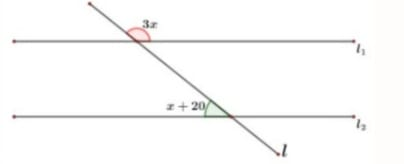

garis EF adalah garis bagi antara titik A dan B serta titik C dengan D.

2. Jika garis l_1 dan l_2 adalah dua garis yang sejajar, maka nilai x adalah…
Jawab:
x + 20̊ + 3x = 180̊
4x + 20̊ = 180̊
4x = 180̊ - 20̊
4x = 160̊
x = 160̊ / 4
x = 40̊
3. Apa yang dimaksud dengan sinar garis?...
Jawab:
Sinar garis adalah kurva lurus yang berpangkal tetapi tidak berujung.
4. Sebutkan jenis jenis garis!
Jawab:
Dua garis sejajar, dua garis berpotongan, dua garis tegak lurus dan dua garis berimpit.
5. Apa yang dimaksud dengan garis dalam kehidupan sehari-hari?...
Jawab:
Yang dimaksud garis dalam kehidupan sehari-hari yaitu di mana garis bisa dijadikan sebagai alat bantu atau petunjuk yang kita gunakan dalam kehidupan sehari-hari.